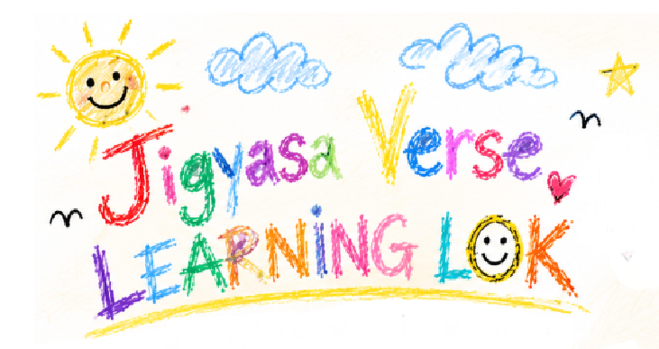

JIGYASA VERSE · LEARNING LOK
open to curious humans
welcome to...

A learning centre for people who ask questions before they have all the answers.
Come because you are curious. Stay because something made you say, “wait... I want to understand that.”
No entrance exam. We checked.